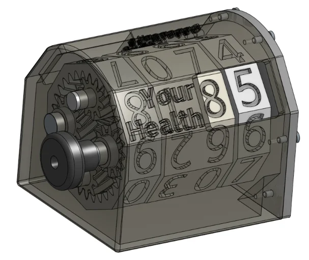
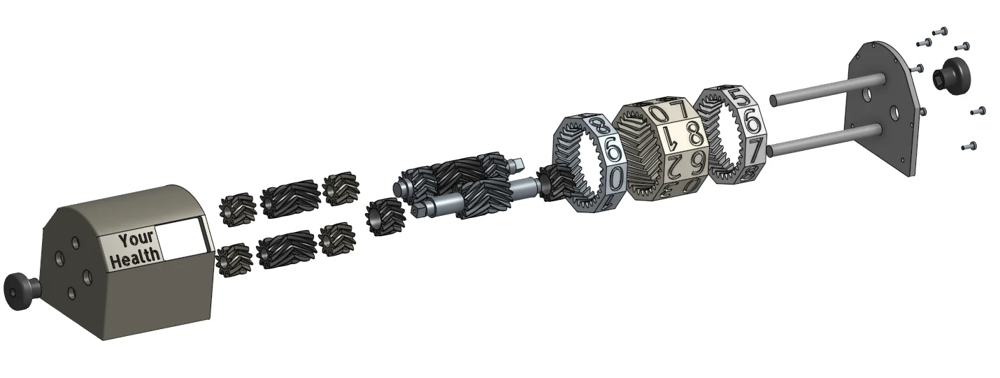

A Magic: The Gathering life counter set with two knobs. You and your opponent each read the same number, right side up, from opposite sides of the table.
Type
Two-sided mechanical counter
Drive
Herringbone gears + internal ring gears
Parts
About 20, plus inlaid digits
Made With
SLS 3D printing

Fig 4.1: The mechanism in motion.
Fig 4.2: A finished counter, ready for a game at 40 life.

Fig 4.3: Exploded view: housing, gear trains, the three ring gears, shafts, and end plate.
The Problem
In Magic, everyone at the table needs to see your life total. A normal counter shows it to you, but from across the table your opponent reads it upside down and backwards. Showing the number twice sounds easy, but the other side of the table flips two things:
01
Digit order: Your ones digit sits where your opponent's tens digit belongs.
02
Digit orientation: Any digit printed to face you reads upside down to them.
The Mechanism
Three internal ring gears carry the digits. From your side, left to right: your opponent's ones, a wide shared tens ring, and your ones.
Fig 4.4: Top-down view. The wide shared tens ring carries two number sets side by side, one per player. Each window frames its player's half of that ring plus their own ones ring, so both sides read 39.
01
One shared tens ring: A single wide ring carries both players' tens digits: two sets of numbers side by side, one rotated 180° so it reads right side up from across the table.
02
Two ones rings, two different parts: They turn together like one long gear and count in the same direction, but the opponent's digits are rotated 180° so they read right side up from across the table.
03
Two knobs, independent gear trains: The tens knob drives the middle ring, and the ones knob drives both outer rings. On each shaft, some gears are driven and the rest spin freely, including a print-in-place idler in the middle, so turning one knob never drags the other digit along.
Holding It Together
01
No central axle, by necessity: The drive gears mesh on the inside of each ring, so spokes to a central axle would collide with them as the ring turned. Driving from the outside would have made the whole counter much bigger. Instead, four gears on a common pitch circle hold each ring in place, letting it spin with nothing in the middle.
02
Herringbone gears set axial position: Each ring's drive gear is fixed at a precise point along its shaft, and because herringbone teeth can't slide past each other sideways, that locks the ring in place. The other three gears float, and the rings can't drift sideways and rub against each other.
03
The tradeoff is assembly: Every ring has to be clocked to the right tooth so both sides show the same number. Parts can't go on one at a time; everything gets aligned, then slides on together.
Drag to rotate, right-drag to pan, and scroll to zoom. The casing starts hidden so you can see the gear trains; use the chips below to show or hide parts. For the full parametric model, open it in Onshape.
🖱 Drag to rotate • Scroll to zoom • Click chips to toggle parts
Loading 3D CAD Model...
Getting There
01
The digit swap: My first prototype ordered the rings ones, tens, ones, tens. From across the table, that turned 67 into 76.
02
The reused ring: I tried to be clever and reuse one ring part for both ones digits, flipping only the herringbone direction of the drive gear in CAD. I'd put a lot of work in before realizing that made every number read upside down to the person across the table, so the opponent's ring had to become its own part.
03
Four rings became three: An earlier version had two middle tens rings that moved together. Merging them into one wide ring cut about a quarter of the parts and made assembly easier, with three rings to align instead of four.
Every part is SLS printed, with white digits inlaid and glued into each ring. I've built about 20, enough for my playgroup to keep 4 at every place we play. Easier assembly and a detent click per number are the next improvements if I ever build more.